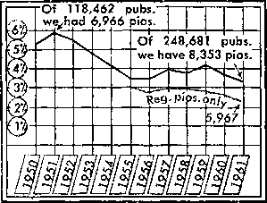

FOR UNITED STATES OF AMERICA
JANUARY, 1962
VOL.V NO. 1
“Be courageous and let your heart be strong. Yes, hope in Jehovah.”—-Ps. 27:14.
1 The future belongs to those who build for it! How to build is the question. According to divine requirements is the answer: “Watch the blameless one and keep the upright one in sight, for the future of that man will be peaceful.” (Ps. 37:37) God requires a blameless way of life while we are doing the building by bearing witness to his name and kingdom. We must also help others build for the future, and 77ic Watchtower has proved to be an excellent aid in this work. So let us feature it enthusiastically in our ministry.
New Sermon
2 To get the Watchtower campaign off to a fine start, a new sermon has been prepared, one thoroughly field-tested throughout the country. It is one that will be a great help for building to the future in our territory, for the theme of the sermon is “Who Are Jehovah’s Witnesses?” You will be anxious to learn it and use it. Those who have already done
J OFFER FOR JANUARY ? ? Subscription for “The Watchtower," ( I with three booklets, for $1. i I THEME FOR JANUARY | ’ Building to the Future According ( | to Requirements.—Ps. 37:37. j
so report encouraging results. From the West came this report: “Out of nineteen calls I was able to give the sermon seventeen times.” From the Midwest: “In giving the sermon twenty times I was able to obtain seven Watchtower subscriptions.” The general conclusion was: “This sermon will do much good in letting people know who we are and why we call. Several persons said they were glad to know more about Jehovah’s witnesses.” Get acquainted with this sermon right away so as to be able to use it effectively.
3 To build for the future you will want to see that you cover all your territory with the offer. So your territory can be thoroughly covered keep a record of not-at-homes. A circuit servant writes: “While calling back on not-at-homes; my wife and another publisher obtained seven subscriptions and placed thirty-six magazines. It certainly shows the importance of keeping a good record, as the people not at home are usually the ones who are seldom given a witness.”
Obtaining Your Quota
4 As we build to the future, what
Whot is to Pioneering?
1 Did you ever say to yourself, “Is it possible for me to pioneer?” Many more of us could and should carefully consider whether we can do so or not. Realizing the seriousness of the times and the need for more pioneers, the Society is very much concerned over the drop in the number of regular pioneers. All of us should study the graph on this page, which shows what has taken place. Then let us ask ourselves if we are entirely free of any responsibility for the downward trend.
2 This is the story it vividly tells : Ten years ago, 1951, with an average of 118,462 publishers in the United States, 6,966 were on the pioneer list. That was 5.9 percent of the total publishers. For the 1961 service year we had a drop to 3.4 percent. This represents an average of 8,353 pioneers, which is 3.4 percent of the number of last year’s average of publishers—248,681. Of the 8,353 pioneers, on an average, last year (this figure includes circuit and district servants, special, regular and vacation pioneers) only 5,967 were regular pioneers. The number regularly pioneering is therefore down to 2.4 percent of our total publishers, as shown by the red line on the graph. Why this decline in regular pioneers? As we draw closer should be our individual goal during this campaign? Publishers should strive to obtain at least two new subscriptions, pioneers 20 and special pioneers 30. During last year’s four-month Watchtower campaign, publishers averaged 1.3 subscriptions, pioneers 18.2 and special pioneers 28. The quotas are indeed within reach I So press forward toward your quota; thus building to the future in your territory.
5 What will aid us to reach our (Continued on page 4, col. 1)
to the realities of the Kingdom, is the joy of full-time service losing its hold on us? Are fewer of us in a position to pioneer? No, at least we do not think so. The facts are that there are more than twice as many publishers now to draw from
PERCENTAGE OF PIONEERS TO PUBLISHERS
as in 1951. Could not many, many more dedicated persons arrange to pioneer? It is something for each one of us to think about.
3 Satan has put many distractions before mankind, and it could be that some of the brothers are in pursuit of things that distract from the field service work, and these things could distract so much that proba-
(Continued on page 2, col. 3)
* Help others ‘build upon the rock-mass’ with “The Watchtower.”
FIRST MEETING IN JANUARY
Theme: Building to the Future According to Requirements.
5 min: Welcome, text, comments. 10 min: Talk on “Building to the Future According to Requirements.’’ (See ‘Watchtower,” January 1, 1961, pp. 5-10, and January 1, 1962, p. 27.) 15 min: Question-and-answer discussion of main article, “Build to the Future According to Requirements.” 23 min: Sermon: “Who Are Jehovah’s Witnesses?”
Chairman (3 min.) Our objective in the next four months: To offer “The Watchtower” at every home in our territory, using a sermon specifically designed to reveal the origin and purpose of Jehovah’s witnesses. Use it confidently and with assurance, for we are representing the greatest name in the universe. Make it adaptable to varying circumstances and territories. Select an introduction best suited to your territory. (See “Presenting the Good News.”) The sermon itself is taken from “Sermon Outlines,” section 28, subheading “A.”
Chairman (10 min.) With sermon displayed on blackboard, chairman conducts lively discussion of introductions, transitions, scriptures, etc. Competent publishers should be assigned in advance to prepare helpful introductions and transitions.
Theme: "Who Are Jehovah’s Witnesses?”
Jehovah purposes to have witnesses —Isa. 43:10 Ancient witnesses were men of faith
—Heb. 12:1, 2 Jesus was faithful and true witness
—John 18:37 Witnesses now actively proclaiming Kingdom as only hope
—Matt. 24:14
Suggested introduction and transitions: “Good morning. My name is ---. Perhaps you are aware that many religious organizations, both Catholic and Protestant, have urged more study of the Bible and more personal visits on church members to strengthen faith in these critical days. Jehovah’s witnesses heartily recommend this method of increasing understanding and appreciation of God’s Word. Presently we are doing this work in 185 lands throughout the world. Many we call on wonder what our purpose is, where we get our name and the authority to do this work. Just as there are witnesses who testify in court, the Bible shows that God would have witnesses to testify on earth concerning his name and purposes. (Isa. 43:10) Faithful men of ancient times were identified as witnesses. (Heb. 12:1, 2) Jesus’ primary purpose In coming to earth was to bear witness about his Father, Jehovah. (John 18:37) Jehovah’s witnesses are now actively proclaiming the good news about God’s kingdom as a witness to all nations. (Matt. 24:14) Our regular visits to the homes of people of other religious beliefs are designed to aid all persons of good will toward God to learn about Jehovah’s name and the blessings of his kingdom foretold in the Bible. The foremost instrument used in this work for the past 82 years is “The Watchtower,” which is now distributed in 62 languages and has a circulation of 3,850,000. It is read by Catholics, Protestants and Jews. Note the text at Isaiah 43:12 that it highlights here on front cover.
“The Watchtower” faithfully sticks to its purpose of announcing Jehovah’s kingdom, as shown here on inside cover. [Read appropriate excerpts or tie in appropriate parts in article, such as in January 1 issue, page 4, last of paragraph 3.] A year’s subscription is only $1, and to all new subscribers we are giving these three Bible-study booklets.”
Competent publisher (8 min.) Well-prepared presentation demonstrates sermon’s effectiveness.
Chairman (2 min.) Prepare and rehearse the sermon immediately. Use it at every door if possible. Anticipate objections and follow up all interest.
7 min: Concluding comments. (Make appropriate comments on our work during the coming year; also cover “What Happened Here Last Month?” and “Around the World in 1963.”)
SECOND MEETING IN JANUARY
5 min: Welcome, text, comments.
10 min: New World News and Announcements.
20 min: Talk on 1962 yeartext: “Be Courageous and Let Your Heart Be Strong. Yes, Hope in Jehovah.” (Ps. 27:14) (See “Watchtower,” December 15, 1961, pp. 741-755.)
15 min: “Presenting the Good News” —demonstrate.
10 min: Concluding comments. (Include remarks on the slogan, based on Matthew 7:24, 25. at bottom of page 1.)
THIRD MEETING IN JANUARY
5 min: Welcome, text, comments.
15 min: Talk on “Congregation Organization” arti.de “Working with the Circuit Servant
12 min: Reports from literature and accounts servants regarding their visit with the congregation servant.
18 min: “What Is Happening to Pioneering?” Question-and-answer discussion.
10 min: Concluding comments. (Include remarks on slogan, based on Luke 12:31, at bottom of page 4.)
FOURTH MEETING IN JANUARY
5 min: Welcome, text, comments.
20 min: Talk on pioneer letter dated December 15, 1961.
20 min: Use of the Calendar, “Yearbook” and “Index.”
Chairman (3 min.) Calendar daily reminds of need to be courageous and remain firm in faith. “Yearbook” keeps Jehovah’s people informed of ministerial progress earth-wide and of the problems and experiences of our brothers in all countries. Daily text provides stimulating spiritual nourishment for each day. “Index” much help in finding additional points for text discussions. Mature brothers, recognizing value of these instruments, can assist others to use them.
Demonstration (8 min.) New pub-, lisher hurriedly approaches literature servant at counter just as he is closing and requests his copy of “Yearbook” and calendar. Servant gives them to him, remarking that much value will be derived from them during year. They examine calendar and agree it is beautiful and inspiring. Publisher pleased he has them but wonders, “When will I get time to read the ‘Yearbook,’ with all the other publications I have to read?” Notes he is reading Bible through, studying new book at congregation book study, receiving a new magazine each week, besides preparing for field service and meetings. Literature servant agrees we lead a happy, busy life, but we can still find time for “Yearbook.” “How?” new brother asks. Servant explains, “We eat each day,” so the daily text may be discussed at breakfast table before, during or after the meal. All in family can share. Questions may be raised and a generally upbuilding discussion may be enjoyed, thus starting the day off right. If family only together at evening meal, then discussion may be held then. Publisher says, “We are new; what if it is a difficult text?” Servant mentions “Index” may be used to gather additional information. Takes “Index” from stock and they look up text for that day (or related material under headings in Subject Index) and note references in the publications. By reading over material on pages referred to, text may be understood. Servant then mentions reports and experiences from different countries are excellent and suggests different members of family be assigned to read report from one or two countries a day and relate to the others the theocratic progress, something about the country and tell the experiences. Publisher agrees this would be beneficial and upbuilding. Will start family “Yearbook” discussions right away.
Audience Discussion (7 min.) Chairman asks audience to tell of other ways they use “Yearbook.” Some comment that they are personally built up and incited to greater activity by reading experiences of their brothers elsewhere (cite examples); others use experiences and reports for weekly organizational talks at conclusion of Bible studies (cite examples); servants find experiences helpful in service talks, in building up weaker ones and reenergizing inactive publishers; another reads Bible chapter in which text is found each day and has thus gained greater appreciation of texts and read much of Bible; daily text discussion provides talking points in service and in conversation with others, etc.
Chairman (2 min.) Use “Yearbook” and “Index” regularly. Hang calendar where it can be seen. Many newer publishers can be helped to appreciate value of these publications if servants and mature publishers will teach them to use them properly.
15 min: Concluding comments and consideration of matters needing special attention in local congregation.
Pioneering (Cont’d)
bly no consideration has ever been given to pioneering. Where do we get pioneers? Well, there are those who are just getting out of high school. A good many of them have no particular obligations, and what finer service could they enjoy than to he in the full-time pioneer ministry? Then, too, there are a good many mothers who send their children off to school during the day and, if they do not have too much to care for in the home, perhaps they could work out an effective pioneer schedule. There are quite a
Working with the Circuit Servant
1 What a loving provision from Jehovah every four months! Yes, how much we look forward to this special week of field service activity with the circuit servant! Each publisher will want to schedule his affairs so as to spend at least five hours in the field service during this visit. Great personal benefit will be received by applying the Scriptural principle, “By iron, iron itself is sharpened. So one man sharpens the face of another.” (Prov. 27:17) Since the purpose of the circuit servant’s visit is to help us to ‘fully accomplish our ministry,’ each one should take advantage of this loving provision and utilize it to the full. —2 Tim. 4 : 5.
2 When the congregation servant receives the form on which to note the names of publishers who are to work with the circuit servant, he will begin immediately to organize field service for this special week. Knowing of the visit two months in advance, many publishers arrange with their employers to be away from secular work for a day, or half a day, or perhaps several hours during the circuit servant’s visit, to their great spiritual benefit. When the schedule is worked out, the overseer will make sure that each publisher assigned to work with the circuit servant definitely understands
Pioneering (Cont’d)
number of young married couples with no obligations, and it may be possible that they could arrange part-time work and take up the pioneer service and prepare themselves for special pioneer work or circuit or district work later on. Of course, there are whole families that have gone into the pioneer work together and have made a success of it. And there is that group of people who are perhaps retired, or eligible for a pension of some kind. Their income may be sufficient to keep them going in the pioneer service.
4 We have all kinds of persons in the pioneer work, young, old, married and single. In fact, since they have come from all of these groups, maybe some of the rest of us can think about the matter as it applies to us, arranging to get into the pioneer service. As congregation publishers we have found this one thing to be true: The more time we spend in the preaching and teaching activity the more blessings we receive.
5 You know, when we do not give a thing consideration, sometimes we think it does not apply to us. We say, “Well, pioneering is for the other person.” But maybe it is for the date, time and type of work to be engaged in. Each publisher is encouraged to keep his appointment faithfully.
3 All publishers are encouraged to support all field service arrangements during the week, not just those assigned to work with the circuit servant or those assigned to a particular service center. This will also permit circuit servants’ wives to have greater’ opportunities to work with sisters and younger publishers, imparting valuable assistance to them.
4 Reports show that support is especially weak in the afternoons, in fact, some circuit and district servants have had to work by themselves on these occasions. Respond to this opportunity and have back-calls and Bible studies lined up in advance in order to make the most of these fine teaching occasions. Wherever possible, Bible studies should be rescheduled to permit publishers to take the circuit servant along in the afternoon. Also, those attending school should not be overlooked for afternoon activity after school.
5 Did you know that it is possible for the circuit servant to aid up to thirty publishers during his visit? Will you help him to fulfill his responsibilities and privileges in this regard?
each one of us. If each one of us would think about it we might find out that we could do it.
6 The Society is confident that there are many more individuals among the dedicated publishers who could pioneer if they would just think about the matter. If enough of us think about the matter maybe we could build the pioneer- ranks up to 5 percent again, or close to six. Even if it is 5 percent of our present number of publishers in the United States, we could have 12,000 individuals reporting as pioneers or special pioneers or circuit and district servants. Would not that be wonderful?
7 Of course, there is a reason for wanting to increase the number of those in the pioneer ranks. It is not just to have larger numbers. The reason we are encouraging more to pioneer is that a greater witness will be given in the United States if we have them. More homes will be called on, more back-calls will be made and there will be more Bible studies started. Thus more praise will be given to Jehovah’s name. Let every one of us think about it, and if we find we can pioneer, then let us write to the Society for an application.
♦ The Society is sending a series of special letters to all congregations encouraging pioneering. These letters will be read at the conclusion of a Watchtower study early each month and thereafter handled at the service meeting according to instructions that will appear under “Your Service Meetings.’’ Pioneers, congregation servants and circuit and district servants will also receive special letters of instruction as to their part in the program.
♦ On Sunday, April 8, the special public talk “Christendom Has Failed God! After Her End, What?” will be given in all congregations. The February Kingdom Ministry will give additional information.
♦ The outlines for the 1962 series of public talks are being sent to each congregation. When they are received, the congregation servant should assign the talks to those who are qualified public speakers. The new series will begin on April 15.
Starting March 4 circuit servants will give the public talk “Is This the World’s Last Generation?” Sometime in February, as directed by the Society, at circuit assemblies district servants will commence giving the talk “Who Will Rule the World?”
Beginning January 15 orders may be placed for the 1961 Watchtower and Awake! bound volumes in English and Spanish. At the same time the Watch Tower Publications Index for 1961 in English may be ordered. It is best to order these items at the same time. It will be appreciated if publishers and pioneers will order through the congregation when other literature is being ordered. The cost is $2 per volume; the Index, 10c.
Orders may now be placed for the Yearbook in German and for the bound volumes of The Watchtower and Awake! in German. When they are available they will be mailed to you.
New publications available:
1962 Yearbook and calendar —English
NOVEMBER SERVICE REPORT
Av &v Av Av
Pubs. Hrs, B-C Bi. St Mags. Sp’l Pios. 675 147.2 54.5 7.7
Vac. Pios. 1,885 83.2 23.4 3.0
TOTAL 260,004
Public Meetings Held: 22,972
UNITED STATES QUOTA FOR 1962 273,549 Publishers
WHAT HAPPENED HERE LAST MONTH?
November’s publisher report is our second best ever! Only in April, 1961, did we have more publishers. Commendably, September, October and November have seen a steady increase in publishers. Very fine, indeed! Another grand thing was Bible studies, which increased from October’s 189,816 up to 196,093. From these many studies, what excellent potential exists for many more new publishers in December!
What must we watch and increase? Hours and magazines. As shown above, publishers, pioneers and special pioneers are below their magazine quotas. As for hours, we dropped from October’s 3,419,239 to 3,194,768. A loss of 324,471! Publishers’ hours dropped from 10.0 down to 9.4; regular pioneers 96.6 to 93.5. Special pioneers increased their service. Brothers, let all of us spend more time in service feeding the sheep.
With the New Sermon
1 During the Watchtower campaign we have a fine new sermon to use. To introduce it in mixed territory or where the territory is worked quite regularly, you might use the direct approach, which has proved to be quite successful. You might say: “Good morning. I’m so glad I found you home this morning. My name is ----. I’m one of
Jehovah’s witnesses and my call is being made to answer questions people often ask about us. No doubt you have wondered why we call ourselves Jehovah’s witnesses and what we hope to accomplish by our home visits. You see, in the Bible we are told ...” (Then go right into the sermon.)
2 In areas where there is considerable prejudice against Jehovah’s name or where the initial mention of it might close the ears of the householder, we could use the indirect approach. We might say:
Build io the Future (Cant’d)
quota? Offer The Watchtower with confidence. We have every reason for a most positive approach; we know every issue contains enlightening articles of comfort and hope for everyone—both for those in the truth and those who are not. For new ones a subscription for The Watchtower is a powerful witness, one that is given twenty-four times a year! Without hesitation, offer the subscription at every opportunity.
6 One of the greatest aids to reaching your quota is being regular in the house-to-house ministry. Put forth every effort to spend two or more hours each week offering the subscription. Though the weather will be cold in many areas, our love for God and our zeal to proclaim his kingdom will not be chilled. Let all congregations endeavor to maintain at least a ten-hour field service average.
7 Other aids to reaching your quota are: Make note of subscription promises; then call back. This has been very fruitful. Offer the subscription to those with whom you study, persons to whom you give an incidental witness and to friends and relatives. Another avenue for ob
“Good morning. --- is my name
and I am a minister. An important matter has brought me to your door. You have probably kept up with the news and note the grave problems that face mankind and threaten our life and security. Do you think that God would have the people know what these things mean? The Bible shows that at a time similar to this he raised up Noah as a witness. Today Jehovah’s witnesses call on the people all over the world, but many do not yet understand who we are and what our purpose is in calling. I would like to show you what the Bible says about this ...” (Make transition to first scripture.)
3 Use the introduction that best fits your territory and your householder and gains a listening ear. Remember, tactful boldness creates respect and interest. Also, it is a sign of confidence and inspires willingness to listen to what is being presented.—Isa. 54:17.
taining subscriptions will be those many persons who obtained the new Bible. If a person already subscribes, make the subscription offer with Awake! (During the campaign publishers will remit 90c for each new subscription.) Publishers, if they so desire, may offer both The Watchtower and Awake! and six booklets on a contribution of $2. Many publishers and pioneers report excellent results with tiie double offer. Congregations may arrange for a neat chart to be displayed during the service meeting, to keep the brothers advised of their progress and to encourage them.
8 As we obtain subscriptions, do not forget to try to start studies where literature is initially placed or to make arrangements for return visits.
9 So build to the future. Learn the new sermon, practice it, use it. Keep a record of not-at-homes and call back. Work for your subscription quota. To obtain it, be regular in house-to-house witnessing. Start Bible studies. The building work involves much, but the rewards are great. To whom does the peaceful future in an endless new world belong? To those who build to it now! continually his kingdom”
Published monthly by Watchtower Bible and Tract Society’ of New York, Inc., 117 Second-class postage paid at Brooklyn, N.Y. Printed in
♦ Persecution and prosecution of brothers in Spain continue. American brother in Spain as tourist was arrested for talking about the Bible in a private home. He was not even permitted to wait for his laundry to dry so he could take it with him, but was escorted to the border and expelled from Spain on November 2.
$ Tanganyika reports new peak of 656 publishers—a 17-percent increase. District assembly at Dar Es Salaam attended by 281, with 26 baptized. Representatives present from Kenya, Uganda and Zanzibar; talks in Swahili and English.
$ Mexico reports largest assembly to date, with 17,651 attending. Over 4,000 persons of good will at public lecture; 947 immersed. More than 6,000 visited Bethel home to view construction of new addition.
♦ Fine new Bethel home dedicated in Montevideo, Uruguay, on October 28; also being used for Kingdom Ministry School.
♦ Cyprus reports United Worshipers Assembly in October with 503 present and 12 baptized.
If you are planning to make the around-the-world trip with Jehovah’s witnesses in 1963, please write immediately to Watch Tower Bible and Tract Society, Office of the President, 124 Columbia Heights, Brooklyn 1, New York, or to any branch office of the Society, doing so before February 1, 1962. Give your name and address. If several in one family will be going, all the names can be listed in one letter. All you need to state is that you are planning on the around-the-world trip with Jehovah’s witnesses.
The air fare will be approximately $1400 to $1500. Additional daily expenses, depending mainly on you, may run around $15 a day.
The New York assembly dates are July 7-14, 1963. The last assembly will be in Los Angeles on September 1-8. To take in all assemblies requires sixty-four days, starting with New York. If you find that time is a problem it may be possible to skip the New York assembly, start vacation time about July 13, and hear the program in English at other assemblies. Some brothers may wish to start the trip with the closing of the Italian assembly on July 27 or 28 and end with the Honolulu assembly on August 31. This would take about thirty-eight days of traveling time. The Honolulu assembly will be held August 28 to September 3. So a trip can be made in less time, and you will still be attending some of the assemblies in Europe and Asia. If any wish to do this, please so state in your letter.
Those who are going should file their names now and details will be sent out by mail to each individual as to how the trip will be arranged. The information needed now is, WILL YOU BE GOING AROUND THE WORLD IN 1963?
Adams St., Brooklyn 1, N.Y.
U.S.A.
4